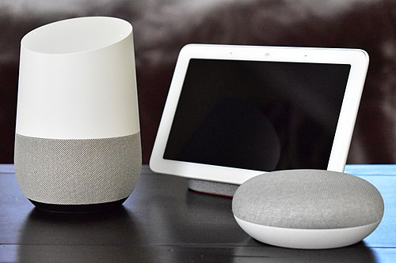

HISTORIA
Google Home , es un dispositivo hardware moderno, es un altavoz inteligente desarrolladopor la compañía Google. El primer dispositivo se anuncío en el 2016 y el lugar de lanzamiento fue en los Estados Unidos, hubo posteriormente diferentes lanzamientos en distintos paises en 2017, a España llegó en 2018. Google Home permite a los usuarios utilizar comandos para interactuar con la asistente de Google, a la cual la llamaron Google Assistant. Google creó el Asistente de Google para hacerle competencia a Amazon Echo. En el mes de octubre lanzaron una aplicación app para Android y para ¡OS.
INFORMACIÓN
Se integra con un gran número de dispositivos, tanto de la marca como de terceros, lo que permite a los usuarios escuchar música, controlar vídeos y fotos,recibir noticias o controlar dispositivos enteramente por voz. Los dispositivos de Google Home llevan así integrada la automatización en casa.
CARACTERÍSTICAS
- Altavoz inlámbrico
- Altavoz inteligente.
- Reproductor de medios inteligentes
- Software: sistema operativo- chromecast
- Plataformas habilitadas: ¡OS y Android
- Comercializado por APP STORE
- Fabricante: GOOGLE
- Fecha de lanzamiento: 2016
COMPRAR
Diferentes tiendas donde se puede comprar este dispositivo